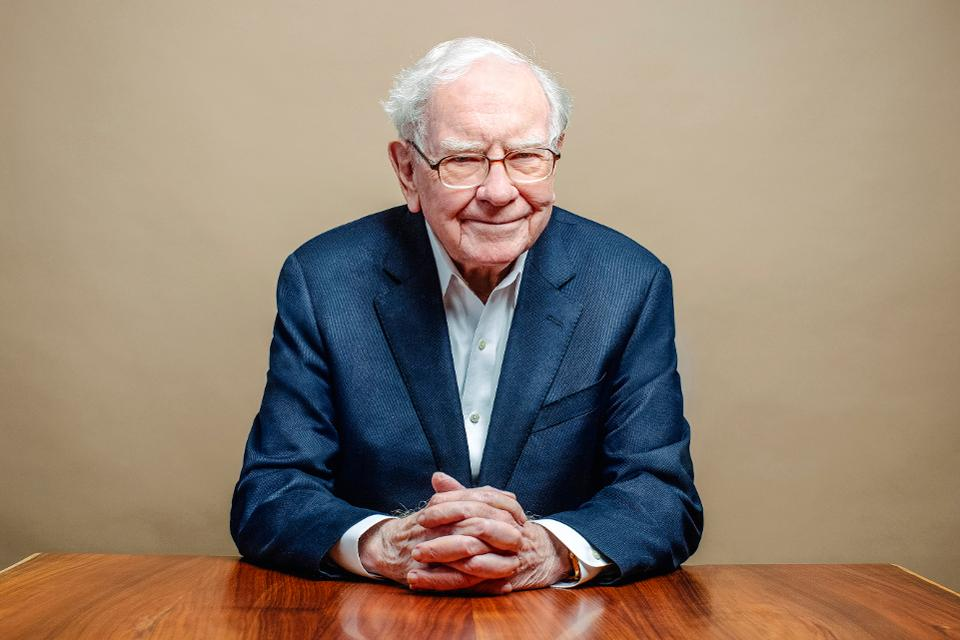

CEO, Berkshire Hathaway
The most successfull investor in the world.
| 1930 | Born as the 2nd son of a broker in Omaha,Nebraska. |
| 1936 | Made his first money with buying six-packs of coke-cans for 25cent and selling them for 6 cent per can. |
| 1941 | Had his first experience with the stock market as he bought 3 prefered shares of "Cities Service". |
| 1951 | Earns a Master of Science in Economics from Columbia University. |
| 1951 | Buffett marries Susan Thompson at Dundee Presbyterian Church. The next year they had their first child, Susan Alice. |
| 1954 | Buffett accepts a job at Benjamin Graham's partnership. |
| 1962 | He bacame a millionaire because of his partnerships - which had an excess of >7 Mio$ (>1Mio$ belongs to him) |
| 1973-1988 | With his investment-holding "Berkshire-Hathaway", he begins buying large amount of stakes in companys like "Washington Post Company","ABC", "Coca Coly Company" and much more. |
| 1990 | Became a billionaire on the paper as he starts to sell Berkshire Shares A. |
| 2008 | Buffett became the richest person in the world, with a total net worth estimated at $62 billion |
| Today | Even though he continuously donate billions of dollars to charity, he is still the sixth richest man in the U.S. (~$115 billion) |
If you have time, you should read more about this incredible human being on his Wikipedia.